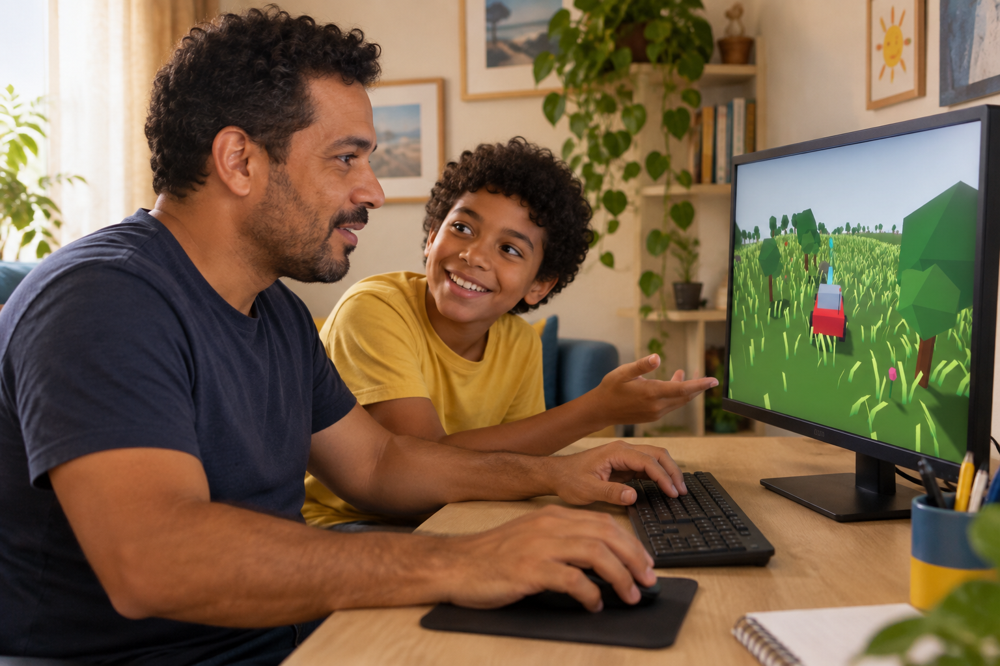
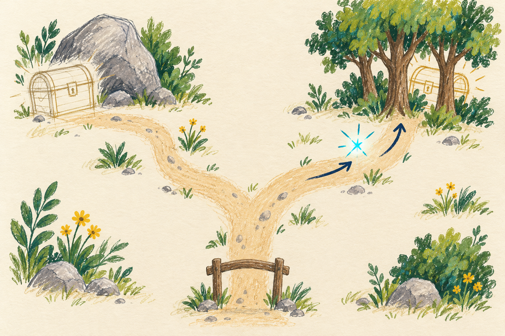
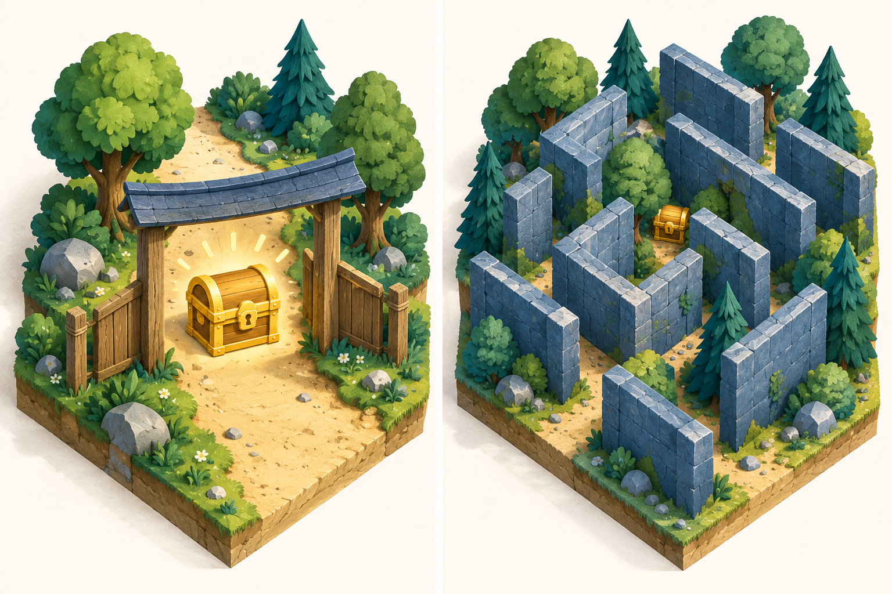
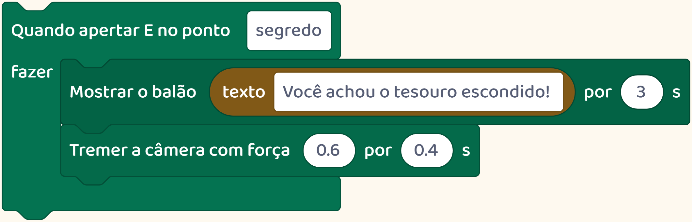
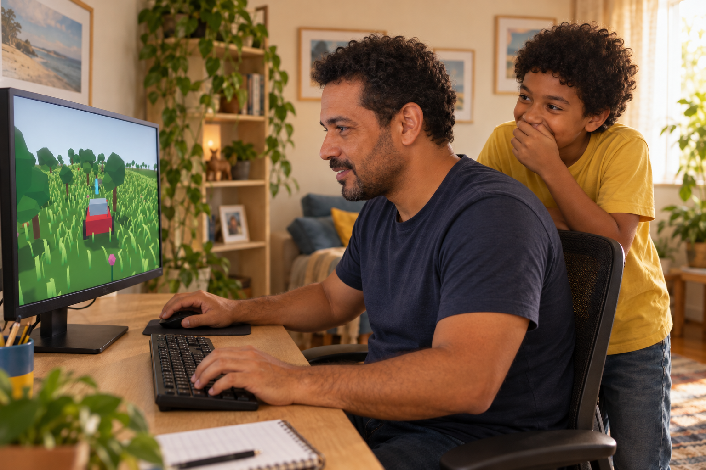

Por trás do jogo
Imagine seu filho escondendo um tesouro num jogo.
E chamando você para encontrar.

Imagine seu filho escondendo um tesouro num jogo.
E chamando você para encontrar.

Para criar esse desafio, ele precisa pensar em quem vai jogar.

Onde colocar o tesouro? Que pista ajuda a encontrá-lo?
Se aparecer logo na entrada, a busca pode terminar rápido demais.

Se ficar num lugar impossível de perceber, talvez o jogador nem descubra que existe.
Veja este exemplo da nossa plataforma.
No meio da floresta, um brilho indica o lugar de um tesouro.
Quem cria escolhe onde ele fica e o que acontece quando alguém o encontra.
Neste jogo, chegar perto e apertar a tecla E faz aparecer uma mensagem e a câmera tremer.

Depois, vem o teste: outra pessoa joga e procura.
A criança observa, ouve o que ela achou e decide se quer mudar o lugar ou a pista.
Criar jogos dá espaço para inventar uma experiência para outra pessoa.

Siga o perfil para conhecer mais possibilidades de criação.